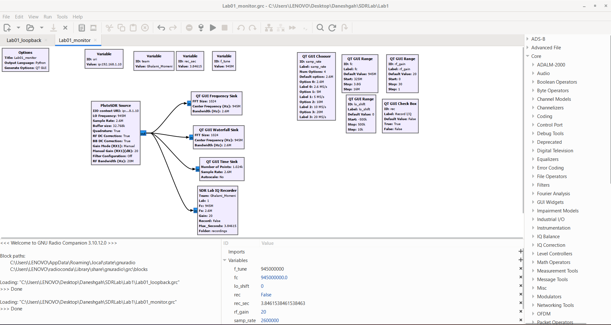
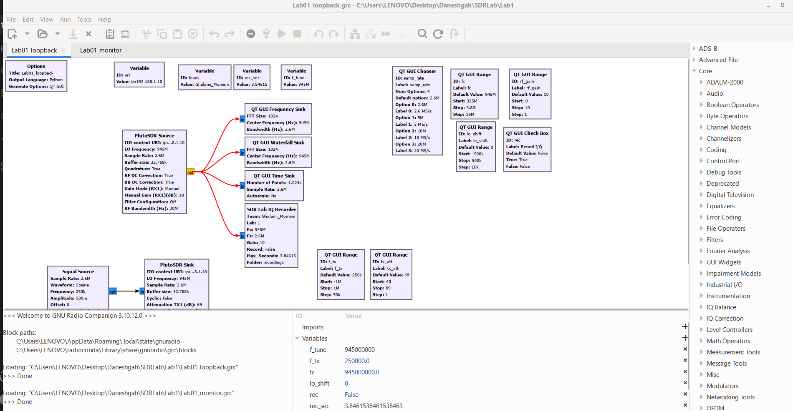

رفتن به محتوای اصلی
sdr.
دفتر آزمایش رادیو نرمافزار
SOFTWARE DEFINED RADIO LAB
فهرست آزمایشها
فایلها ↙
پیشگزارش آزمایش اول

تصویر فلوگراف Monitor؛ پایش طیف و ضبط نمونههای IQ.

تصویر فلوگراف Loopback؛ ساختار آزمون حلقهٔ بازگشت.
Lab01_monitor.grc ↙
فایل فلوگراف پایش طیف برای GNU Radio Companion.
Lab01_loopback.grc ↙
فایل فلوگراف آزمون حلقهٔ بازگشت برای GNU Radio Companion.
SDRLab_IQ_recorder.py ↙
کد پایتون بلوک ضبطکنندهٔ نمونههای IQ.